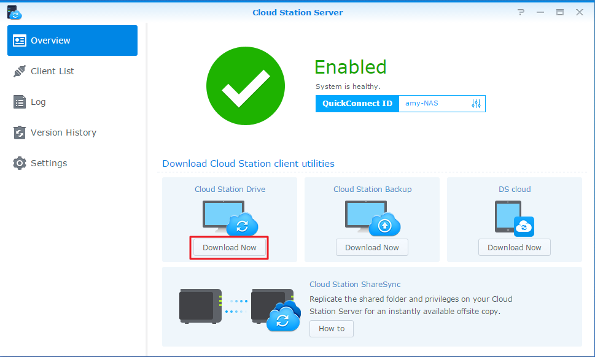

Überblick
Cloud Station für Synology NAS ist eine Dateisynchronisierungsanwendung, mit der Sie Dateien auf Ihrem Synology NAS mit anderen Geräten, wie etwa mit Computern oder Mobilgeräten (mit DS cloud), mühelos synchronisieren können. Installieren Sie Cloud Station Server auf Ihrem Synology NAS und Cloud Station Drive auf Ihrem Computer, um die Dateien auf Ihrem Computer automatisch mit dem Synology NAS zu synchronisieren.
Verbindung zwischen dem Synology NAS und dem Computer einrichten
- Gehen Sie zu Paketzentrum, suchen Sie Cloud Station Server und klicken Sie auf Installieren.
- Starten Sie Cloud Station Server.
- Klicken Sie auf der Registerkarte Überblick auf die Schaltfläche unter Cloud Station Drive, um Cloud Station Drive für Ihr Betriebssystem herunterzuladen. (Sie können Cloud Station auch im Synology Download-Zentrum herunterladen.) 
- Starten Sie das Installationsprogramm auf Ihrem Computer und folgen Sie den Bildschirmanweisungen.
- Führen Sie nach der Installation Cloud Station auf Ihrem Computer aus. Klicken Sie auf Jetzt starten.
- Geben Sie die Adresse für den Synology NAS, auf dem Cloud Station läuft (oder die QuickConnect-ID), sowie den Benutzernamen und das Kennwort ein. Sie können rechts auf das Suchsymbol klicken, um nach IPs in Ihrem LAN zu suchen. Klicken Sie auf Weiter.
- Wählen Sie auf Ihrem die Ordner aus, die Sie auf Ihrem Synology NAS und Ihrem Computer synchronisieren möchten, indem Sie auf die Bearbeiten-Symbole klicken. Dann können Sie auf Erweitert klicken, umd die Synchronisierungseinstellungen zu konfigurieren.
- Deaktivieren Sie alle Ordner, die nicht synchronisiert werden sollen.
- Stellen Sie eine maximale Dateigröße ein oder fügen Sie Dateinamen oder -typen in die Blacklist ein, damit sie nicht synchronisiert werden.
- Wählen Sie aus, ob die Synchronisierung bidirektional erfolgen soll oder ob nur Daten von Ihrem Synology NAS heruntergeladen werden sollen.
- Klicken Sie zum Beenden des Setups auf Fertig.
- Das Cloud Station-Symbol befindet sich in der Taskleiste.
- Klicken Sie auf das Taskleistensymbol, um das Taskleistenmenü zu öffnen. Hier können Sie den Fortschritt und den Status Ihrer Dateien anzeigen. Hier können Sie den Fortschritt und den Status Ihrer Dateien anzeigen. Klicken Sie auf Hauptanwendung, um Cloud Station zu starten.
- Nach dem Starten werden einige Tipps zur Verwendung von Cloud Station angezeigt. Klicken Sie auf den Rechtspfeil, um weitere Tipps anzuzeigen, oder klicken Sie auf Online-Anleitungen, um weitere Informationen zu erhalten. Aktivieren Sie das Kontrollkästchen neben Nicht mehr anzeigen, wenn Sie die Tipps nicht benötigen.
- Jetzt können Sie Ihre Synchronisierungsaufgaben in Cloud Station Drive verwalten.


Frühere Version einer synchronisierten Datei herunterladen
- Klicken Sie in der Taskleiste auf das Cloud Station Drive-Symbol und anschließend auf das Ordnersymbol.
- Rechtsklicken Sie auf Ihre ausgewählte Datei, und wählen Sie Synology Cloud Station > Frühere Versionen durchsuchen.
- Suchen Sie die Version, die Sie herunterladen möchten, und klicken Sie auf das Download-Symbol.


Frühere Version einer synchronisierten Datei von Cloud Station Server herunterladen oder wiederherstellen
- Gehen Sie zu Cloud Station Server > Versionsverlauf und suchen Sie nach der Datei oder dem Ordner, die bzw. den Sie wiederherstellen möchten.
- Wählen Sie die Datei aus, die Sie abrufen möchten, und klicken Sie auf Aktion > Frühere Versionen durchsuchen.
- Wählen Sie die Version der Datei aus, die Sie herunterladen möchten, und klicken Sie auf Herunterladen. Wenn Sie sich sicher sind, dass die ausgewählte Version wiederhergestellt werden soll, klicken Sie auf Wiederherstellen, dann wird Ihre aktuelle Version überschrieben.


Wichtige Hinweise
- Verwahren Sie immer frühere Versionen, falls eine Datei zufällig entfernt oder überschrieben wird.
- Unter Globale Einstellungen können Sie konfigurieren, ob eine Datei von Ihrem NAS erneut abgerufen oder auf Ihrem NAS gelöscht wird, wenn Sie eine Datei auf Ihrem Computer löschen.
Daten mit Mobilgeräten synchronisieren
DS cloud ist bei Apple App Store und Google Play Store kostenlos erhältlich. Sie können auch direkt den folgenden QR-Code scannen.